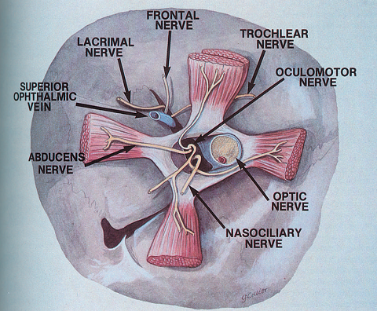
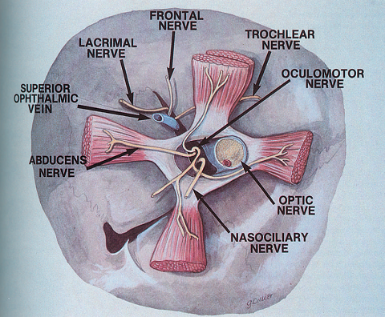

Superior orbital fissure (SOF)
* Định nghĩa:
+ Khe ổ mắt trên  Hình: Khe ổ mắt trên bên phải và các thành phần liên quan nhìn từ phía trước
+ Khe ổ mắt trên

Hình: Khe ổ mắt trên bên phải và các thành phần liên quan nhìn từ phía trước